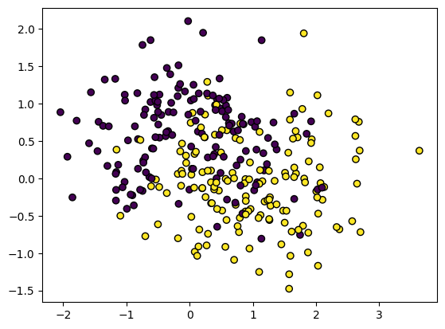

import torch
import numpy as np
import matplotlib.pyplot as plt
from sklearn.datasets import make_moons
from sklearn.inspection import DecisionBoundaryDisplay
def plot_boundary(model, X, y):
xrange = (-X[:, 0].min() + X[:, 0].max()) / 10
yrange = (-X[:, y].min() + X[:, y].max()) / 10
feature_1, feature_2 = np.meshgrid(
np.linspace(X[:, 0].min() - xrange, X[:, 0].max() + xrange),
np.linspace(X[:, 1].min() - yrange, X[:, 1].max() + yrange)
)
grid = np.vstack([feature_1.ravel(), feature_2.ravel()]).T
y_pred = np.reshape(model.predict(torch.tensor(grid).float()).detach().numpy(), feature_1.shape)
display = DecisionBoundaryDisplay(
xx0=feature_1, xx1=feature_2, response=y_pred
)
display.plot()
display.ax_.scatter(
X[:, 0], X[:, 1], c=y, edgecolor="black"
)
plt.show()Lecture 7: PyTorch
Introduction to PyTorch
The most basic object in PyTorch is a tensor. Tensor objects behave much like the AutogradValue objects we are creating in the homework! We can create a tensor object with a given value as follows
x = torch.tensor(4.)
xtensor(4.)Performing basic operations on tensor objects gives tensor objects.
a = x ** 2 + 5
atensor(21.)tensor objects also support reverse-mode automatic differentiation! To use this, we must specify that we will want to compute the derivative with respect to a given tensor. We can do this with the requires_grad argument.
x = torch.tensor(4., requires_grad=True)Once we have a tensor that requires_grad, we can perform operations on it to compute a loss.
a = x ** 2 + 5
L = torch.log(a) # Functions like log must be called through torch
Ltensor(3.0445, grad_fn=<LogBackward0>)Once we have a loss running the backward pass is done exactly as in the homework. First we call backward() on the loss tensor object, then we can access the derivative through the grad property of x.
L.backward()
x.gradtensor(0.3810)We can also create tensor objects that wrap arrays.
x = torch.tensor(np.array([3, 4, 5]))
xtensor([3, 4, 5])We can also just directly create tensors as we would numpy arrays
x = torch.tensor([3, 4, 5])
xtensor([3, 4, 5])Including convienience constructors.
print(torch.ones((5,)))
print(torch.zeros((2, 3)))tensor([1., 1., 1., 1., 1.])
tensor([[0., 0., 0.],
[0., 0., 0.]])Automatic differentiation still works for arrays. In this case it gives use the gradient of the loss (hence the grad property).
x = torch.tensor([3., 4., 5.], requires_grad=True)
L = torch.sum(x ** 2)
Ltensor(50., grad_fn=<SumBackward0>)L.backward()
x.gradtensor([ 6., 8., 10.])We can convert tensor objects back to numpy by calling x.detach().numpy(). (detach removes the variable from any automatic differentiation computations)
x.detach().numpy()array([1., 1., 1., 1., 1.], dtype=float32)At this point it’s probably worth remarking on where the name tensor comes from.
So far we’ve discussed 3 kinds of array objects - Scalars: which are just single values (0-dimensional) - Vectors: 1-dimensional arrays of numbers - Matrices: 2-dimensional arrays of numbers
A tensor is the generalization of a vector or matrix to any number of dimensions. For example, a 3-dimensional tensor can be seen in multiple ways.

A tensor object can be created with any number of dimensions. For example, we could create a 2x2x2 tensor as:
t = torch.tensor([[[1, 2], [3, 4]], [[5, 6], [7, 8]]])
ttensor([[[1, 2],
[3, 4]],
[[5, 6],
[7, 8]]])Or we could create the tensor in the image using arange and reshape.
t = torch.arange(30).reshape((3, 2, 5))
ttensor([[[ 0, 1, 2, 3, 4],
[ 5, 6, 7, 8, 9]],
[[10, 11, 12, 13, 14],
[15, 16, 17, 18, 19]],
[[20, 21, 22, 23, 24],
[25, 26, 27, 28, 29]]])4-dimensional tensors can also be visualized
t = torch.ones((3, 2, 4, 5))
t.shapetorch.Size([3, 2, 4, 5])There are some notable differences between torch and numpy when it comes to operations. The important one to watch out for at this point is matrix multiplation. In numpy we accomplished with with np.dot:
x = np.ones((4, 5))
w = np.ones((5, 2))
np.dot(x, w)array([[5., 5.],
[5., 5.],
[5., 5.],
[5., 5.]])In PyTorch torch.dot only does vector dot products and thus only applies to 1-dimensional tensor objects:
x = torch.ones((4, 5))
w = torch.ones((5, 2))
torch.dot(x, w)RuntimeError: 1D tensors expected, but got 2D and 2D tensorsInstead we use the torch.matmul function for this purpose
torch.matmul(x, w)tensor([[5., 5.],
[5., 5.],
[5., 5.],
[5., 5.]])PyTorch also has many handy built-in functions that numpy doesn’t have, such as sigmoid.
x = torch.linspace(-5, 5, 50)
s = torch.sigmoid(x)
plt.plot(x, s)This makes it very easy to implement something like logistic regression.
class LogisticRegression:
def __init__(self, dims):
self.weights = torch.ones((dims,), requires_grad=True)
self.bias = torch.zeros((), requires_grad=True)
def predict_probability(self, X):
f_X = torch.matmul(X, self.weights) + self.bias
return torch.sigmoid(f_X)
def predict(self, X):
self.predict_probability(X) > 0.5Let’s try loading a dataset, converting it to tensor and making predictions
X, y = make_moons(noise=0.1)
X, y = torch.tensor(X).float(), torch.tensor(y)
model = LogisticRegression(2)
plot_boundary(model, X, y)
When working with PyTorch, it is convention to separate the loss function from the model, where the loss function will just take predictions and labels.
def NLL(pred, y):
LL = y * torch.log(pred) + (1. - y) * torch.log(1. - pred)
return -LL.sum()Gradient descent
Gradient descent is also implemented in PyTorch in the optim module.
from torch import optimGradient descent works a bit differently in PyTorch than what we’ve seen. We first need to construct a gradient descent object which specifies which values we’re optimizing and what the learning rate will be. We specify the values to optimize by simply passing a list of weights/parameters to the constructor.
In PyTorch, basic gradient descent is encapsulated in the optim.SGD class (SGD stands for stochastic gradient descent, we’ll talk about what stochastic means in this context next week.)
optimizer = optim.SGD([model.weights, model.bias], lr=0.1)Notice that this object doesn’t even take in the function we’re trying to optimize, only the inputs. We need to call the function ourselves and run backward() to compute the gradients.
predictions = model.predict_probability(X)
loss = NLL(predictions, y)
loss.backward()Let’s look at our model weights
model.weightstensor([1., 1.], requires_grad=True)We can take a single step of gradient descent using the step method of the optimizer.
optimizer.step()
model.weightstensor([ 1.5771, -1.4567], requires_grad=True)We see that this actually updates the weights themselves!
It’s important to note that in PyTorch, calling backward does not clear the value stored in grad. So computing the gradient multiple times will result in updates to the gradient.
print(model.weights.grad)
NLL(model.predict_probability(X), y).backward()
print(model.weights.grad)
NLL(model.predict_probability(X), y).backward()
print(model.weights.grad)tensor([-5.7714, 24.5667])
tensor([-16.5282, 28.3895])
tensor([-27.2850, 32.2123])We can clear the stored gradients using the optimizer.
optimizer.zero_grad()
print(model.weights.grad)NoneSo far we’ve only taking a single step of gradient descent. In order to run many steps, we need to write a loop to do everything we just saw.
for i in range(10):
predictions = model.predict_probability(X)
loss = NLL(predictions, y)
loss.backward()
optimizer.step()
optimizer.zero_grad()
print(loss.item())47.09358596801758
43.22157669067383
34.15849304199219
31.948076248168945
30.564128875732422
29.81253433227539
29.332521438598633
29.01232147216797
28.785003662109375
28.61783218383789We should now see that our model has been optimized!
plot_boundary(model, X, y)
torch.nn
While PyTorch as a tool for automatic differentiation and optimization would be useful by itself. It actually gives us a lot more than that!
On of the most important features of PyTorch is its model-building tools in the torch.nn module. This gives us a lot of powerful features that we can use to build complex neural networks!
from torch import nnLet’s start by building out logistic regression model in the torch.nn framwork. In order for a model to benefit from torch.nn our model class needs to inheret from nn.Module
class LogisticRegression(nn.Module):
def __init__(self, dims):
super().__init__()
self.weights = nn.Parameter(torch.ones((dims,)))
self.bias = nn.Parameter(torch.zeros(()))
def forward(self, X):
return torch.sigmoid(torch.matmul(X, self.weights) + self.bias)
def predict_probability(self, X):
return self.forward(X)
def predict(self, X):
return self.forward(X) > 0.5There are 2 changes to note here. The first is that we wrapped our weights and bias terms in nn.Parameter. This tells PyTorch that these are the parameters we will want to optimize. We don’t need to specify requires_grad for parameters, PyTorch will take care of that for us.
The second is that we moved the implmentation of predict_probability to forward. In PyTorch models the forward method is special, it defines the model as a function. If we call the model as a function forward will be called internally.
model = LogisticRegression(2)
model(X)tensor([0.8061, 0.9062, 0.5295, 0.8793, 0.5760, 0.7457, 0.7801, 0.5451, 0.2699,
0.6022, 0.8936, 0.7359, 0.8146, 0.7429, 0.3595, 0.6654, 0.8362, 0.5015,
0.5419, 0.7889, 0.8034, 0.7207, 0.7751, 0.8122, 0.3505, 0.3228, 0.6957,
0.5209, 0.6943, 0.8058, 0.7483, 0.5522, 0.7572, 0.5012, 0.5702, 0.9059,
0.8479, 0.5518, 0.7708, 0.7704, 0.5722, 0.6250, 0.4369, 0.8790, 0.5790,
0.6379, 0.4764, 0.5471, 0.7326, 0.4577, 0.9034, 0.7895, 0.6305, 0.6588,
0.6457, 0.4482, 0.7797, 0.7687, 0.8219, 0.9444, 0.5676, 0.6338, 0.5766,
0.8070, 0.3013, 0.7863, 0.6884, 0.7908, 0.7290, 0.7986, 0.5785, 0.6059,
0.7611, 0.8420, 0.6813, 0.6439, 0.7005, 0.7083, 0.5252, 0.4524, 0.2647,
0.7873, 0.5357, 0.5840, 0.9021, 0.6080, 0.7858, 0.7382, 0.7141, 0.9162,
0.5217, 0.7707, 0.7938, 0.6209, 0.4647, 0.6258, 0.3928, 0.3268, 0.5453,
0.8687], grad_fn=<SigmoidBackward0>)This means that we can use instances of nn.Module as parameterized functions. For example, we might create a general linear (technically affine) function in the same way.
\[f(\mathbf{x}) = \mathbf{x}^T\mathbf{W}^T + \mathbf{b}, \quad f: \mathbb{R}^i \rightarrow \mathbb{R}^o\]
Note that here we are not assuming an augmented representation of \(\mathbf{x}\).
class Linear(nn.Module):
def __init__(self, inputs, outputs):
super().__init__()
self.weightsT = nn.Parameter(torch.ones((inputs, outputs)))
self.bias = nn.Parameter(torch.zeros((outputs,)))
def forward(self, X):
return torch.matmul(X, self.weightsT) + self.biasWe can use this module to implement out logistic regression model above.
class LogisticRegression(nn.Module):
def __init__(self, dims):
super().__init__()
self.linear = Linear(dims, 1) # Dims input 1 output
def forward(self, X):
return torch.sigmoid(self.linear(X)).reshape((-1,)) # Turn output into a vector
def predict_probability(self, X):
return self.forward(X)
def predict(self, X):
return self.forward(X) > 0.5model = LogisticRegression(2)
model(X)tensor([0.8061, 0.9062, 0.5295, 0.8793, 0.5760, 0.7457, 0.7801, 0.5451, 0.2699,
0.6022, 0.8936, 0.7359, 0.8146, 0.7429, 0.3595, 0.6654, 0.8362, 0.5015,
0.5419, 0.7889, 0.8034, 0.7207, 0.7751, 0.8122, 0.3505, 0.3228, 0.6957,
0.5209, 0.6943, 0.8058, 0.7483, 0.5522, 0.7572, 0.5012, 0.5702, 0.9059,
0.8479, 0.5518, 0.7708, 0.7704, 0.5722, 0.6250, 0.4369, 0.8790, 0.5790,
0.6379, 0.4764, 0.5471, 0.7326, 0.4577, 0.9034, 0.7895, 0.6305, 0.6588,
0.6457, 0.4482, 0.7797, 0.7687, 0.8219, 0.9444, 0.5676, 0.6338, 0.5766,
0.8070, 0.3013, 0.7863, 0.6884, 0.7908, 0.7290, 0.7986, 0.5785, 0.6059,
0.7611, 0.8420, 0.6813, 0.6439, 0.7005, 0.7083, 0.5252, 0.4524, 0.2647,
0.7873, 0.5357, 0.5840, 0.9021, 0.6080, 0.7858, 0.7382, 0.7141, 0.9162,
0.5217, 0.7707, 0.7938, 0.6209, 0.4647, 0.6258, 0.3928, 0.3268, 0.5453,
0.8687], grad_fn=<ReshapeAliasBackward0>)The power here is that because Linear is also an instance of nn.Module, PyTorch knows that it’s weights should also be considered part of our models weights. We can access the weights of a model using the parameters() method.
list(model.parameters())[Parameter containing:
tensor([[1.],
[1.]], requires_grad=True),
Parameter containing:
tensor([0.], requires_grad=True)]This lets us easily apply gradient descent:
optimizer = optim.SGD(model.parameters(), lr=0.1)
for i in range(10):
predictions = model(X) # Now we can just call model!
loss = NLL(predictions, y)
loss.backward()
optimizer.step()
optimizer.zero_grad()
print(loss.item())76.70811462402344
47.09358596801758
43.22157669067383
34.15849304199219
31.948076248168945
30.564128875732422
29.81253433227539
29.332521438598633
29.01232147216797
28.785003662109375plot_boundary(model, X, y)
PyTorch unsurprisingly also provides a built-in Linear module. As nn.Linear.
nn.Linear(2, 1)Linear(in_features=2, out_features=1, bias=True)Knowing how to make a parameterized function in PyTorch, let’s consider making a neural network layer with a sigmoid activation function.
\[f(\mathbf{x}) = \sigma(\mathbf{x}^T\mathbf{W}^T + \mathbf{b})\]
class SigmoidLayer(nn.Module):
def __init__(self, inputs, outputs):
super().__init__()
self.linear = nn.Linear(inputs, outputs)
def forward(self, X):
return torch.sigmoid(self.linear(X))
Let’s create a layer with 10 neurons. (So \(\mathbf{W}:\ (10 \times 2)\))
layer = SigmoidLayer(2, 10)
print(X.shape)
layer(X).shapetorch.Size([100, 2])torch.Size([100, 10])Let’s use this to create a neural network class for binary classification!
class NeuralNetwork(nn.Module):
def __init__(self, dims, hidden_size):
super().__init__()
self.layer = SigmoidLayer(dims, hidden_size)
self.linear = Linear(hidden_size, 1)
def forward(self, X):
hidden_neurons = self.layer(X)
output = self.linear(hidden_neurons)
return torch.sigmoid(output).reshape((-1,))
def predict_probability(self, X):
return self.forward(X)
def predict(self, X):
return self.forward(X) > 0.5We see that PyTorch recognizes both the parameters of the logistic regression and the parameters of our neural network feature transform:
model = NeuralNetwork(2, 10)
list(model.parameters())[Parameter containing:
tensor([[ 0.2096, -0.3608],
[-0.4380, -0.6813],
[ 0.3196, 0.4796],
[-0.4256, -0.6939],
[ 0.4838, 0.3606],
[-0.0805, 0.5008],
[-0.2017, 0.4119],
[ 0.2697, 0.4036],
[ 0.5785, 0.2659],
[-0.6341, 0.1310]], requires_grad=True),
Parameter containing:
tensor([-0.0678, -0.6714, -0.4546, -0.4149, -0.3568, 0.7036, 0.4120, -0.6844,
0.1531, 0.3548], requires_grad=True),
Parameter containing:
tensor([[1.],
[1.],
[1.],
[1.],
[1.],
[1.],
[1.],
[1.],
[1.],
[1.]], requires_grad=True),
Parameter containing:
tensor([0.], requires_grad=True)]This means that we can easily run our optimization as before.
optimizer = optim.SGD(model.parameters(), lr=0.1)
for i in range(100):
predictions = model(X) # Now we can just call model!
loss = NLL(predictions, y)
loss.backward()
optimizer.step()
optimizer.zero_grad()
print(loss.item())45.445369720458984
43.70785903930664
47.474220275878906
40.63535690307617
42.115936279296875
36.09637451171875
36.04859161376953
32.92196273803711
32.511871337890625
30.93625831604004
30.521907806396484
29.64164924621582
29.293277740478516
28.74832534790039
28.467708587646484
28.101655960083008
27.878223419189453
27.618236541748047
27.442567825317383
27.252187728881836
27.116464614868164
26.97370719909668
26.86859893798828
26.755901336669922
26.669967651367188
26.572307586669922
26.494722366333008
26.40076446533203
26.323572158813477
26.225831985473633
26.144067764282227
26.0379695892334
25.94887924194336
25.831634521484375
25.73374366760254
25.603410720825195
25.4957332611084
25.350324630737305
25.231674194335938
25.068439483642578
24.936925888061523
24.7518253326416
24.604541778564453
24.391887664794922
24.22479820251465
23.97708511352539
23.785263061523438
23.49335289001465
23.272056579589844
22.926254272460938
22.673450469970703
22.265865325927734
21.986351013183594
21.51370620727539
21.222501754760742
20.68614387512207
20.406362533569336
19.806501388549805
19.55826759338379
18.88671112060547
18.671297073364258
17.915258407592773
17.707300186157227
16.870145797729492
16.630151748657227
15.75007438659668
15.45046329498291
14.591230392456055
14.231971740722656
13.452905654907227
13.056207656860352
12.39054012298584
11.986312866210938
11.43923568725586
11.053666114807129
10.611433029174805
10.2611722946167
9.901641845703125
9.592364311218262
9.293046951293945
9.021784782409668
8.764437675476074
8.524192810058594
8.29626750946045
8.080157279968262
7.874066352844238
7.677170753479004
7.488630771636963
7.307856559753418
7.1343464851379395
6.967673301696777
6.807461261749268
6.653371810913086
6.505088806152344
6.3623199462890625
6.224787712097168
6.0922369956970215
5.964423656463623
5.841118812561035
5.722109794616699plot_boundary(model, X, y)
PyTorch also gives us an easier (but less flexible) way to define a composition of modules like this. In PyTorch we can define this simple network using nn.Sequential
model = nn.Sequential(
nn.Linear(2, 10),
nn.Sigmoid(),
nn.Linear(10, 1),
nn.Sigmoid(),
)
model(X).reshape((-1,))Here nn.Sigmoid is a built-in module that just applies the sigmoid function. Its implementation would look like:
class SigmoidLayer(nn.Module):
def forward(self, X):
return torch.sigmoid(X)We could use this to create a network with several hidden layers:
model = nn.Sequential(
nn.Linear(2, 10),
nn.Sigmoid(),
nn.Linear(10, 10),
nn.Sigmoid(),
nn.Linear(10, 10),
nn.Sigmoid(),
nn.Linear(10, 1),
nn.Sigmoid(),
)
model(X)tensor([[0.5571],
[0.5571],
[0.5575],
[0.5571],
[0.5574],
[0.5572],
[0.5572],
[0.5574],
[0.5576],
[0.5574],
[0.5571],
[0.5573],
[0.5572],
[0.5573],
[0.5575],
[0.5572],
[0.5571],
[0.5575],
[0.5575],
[0.5571],
[0.5572],
[0.5571],
[0.5573],
[0.5572],
[0.5575],
[0.5575],
[0.5572],
[0.5574],
[0.5572],
[0.5571],
[0.5571],
[0.5573],
[0.5571],
[0.5575],
[0.5574],
[0.5570],
[0.5572],
[0.5574],
[0.5572],
[0.5571],
[0.5573],
[0.5572],
[0.5574],
[0.5571],
[0.5573],
[0.5574],
[0.5574],
[0.5575],
[0.5573],
[0.5575],
[0.5571],
[0.5572],
[0.5574],
[0.5574],
[0.5573],
[0.5574],
[0.5572],
[0.5573],
[0.5571],
[0.5570],
[0.5574],
[0.5574],
[0.5573],
[0.5572],
[0.5576],
[0.5571],
[0.5572],
[0.5571],
[0.5573],
[0.5571],
[0.5573],
[0.5573],
[0.5571],
[0.5572],
[0.5572],
[0.5574],
[0.5573],
[0.5571],
[0.5574],
[0.5575],
[0.5576],
[0.5572],
[0.5574],
[0.5574],
[0.5571],
[0.5574],
[0.5572],
[0.5573],
[0.5573],
[0.5570],
[0.5573],
[0.5572],
[0.5571],
[0.5574],
[0.5574],
[0.5572],
[0.5574],
[0.5575],
[0.5575],
[0.5571]], grad_fn=<SigmoidBackward0>)PyTorch also provides built-in loss functions. The PyTorch function for the negative log-likelihood for logistic regression is called nn.functional.binary_cross_entropy. It has some sharp edges though.
For one, it expects y to be a float type. We can convert a PyTorch int tensor into a float one by calling the float method.
We also see that our sequential model returns a column vector, so y should match that as well.
optimizer = optim.SGD(model.parameters(), lr=0.1)
yfloat = y.float().reshape((-1, 1))
for i in range(100):
predictions = model(X) # Now we can just call model!
loss = nn.functional.binary_cross_entropy(predictions, yfloat)
loss.backward()
optimizer.step()
optimizer.zero_grad()
print(loss.item())0.6996942162513733
0.6985191106796265
0.6975520253181458
0.6967566013336182
0.6961024403572083
0.6955646276473999
0.6951226592063904
0.6947595477104187
0.6944611072540283
0.6942159533500671
0.6940144896507263
0.6938489675521851
0.6937129497528076
0.6936012506484985
0.6935093402862549
0.6934338212013245
0.6933718323707581
0.6933207511901855
0.6932787299156189
0.6932441592216492
0.6932157278060913
0.6931923031806946
0.6931729316711426
0.6931568384170532
0.6931436061859131
0.6931325793266296
0.693123459815979
0.6931159496307373
0.6931095123291016
0.6931042671203613
0.6930997371673584
0.6930959224700928
0.6930928230285645
0.6930900812149048
0.693087637424469
0.6930855512619019
0.6930838227272034
0.6930822134017944
0.6930808424949646
0.6930795907974243
0.6930783987045288
0.6930773258209229
0.6930763721466064
0.6930754780769348
0.6930745840072632
0.6930738091468811
0.6930729746818542
0.6930721998214722
0.6930714249610901
0.6930708289146423
0.6930701732635498
0.6930694580078125
0.6930687427520752
0.6930680871009827
0.6930674910545349
0.6930667757987976
0.6930661797523499
0.6930655837059021
0.6930650472640991
0.693064272403717
0.6930636763572693
0.6930630207061768
0.693062424659729
0.6930618286132812
0.6930612325668335
0.6930605173110962
0.6930599808692932
0.6930593848228455
0.6930587291717529
0.69305819272995
0.6930574774742126
0.6930568814277649
0.6930561661720276
0.6930555701255798
0.6930549740791321
0.6930543780326843
0.6930537223815918
0.6930531859397888
0.6930525898933411
0.6930519938468933
0.6930513978004456
0.6930506825447083
0.6930500864982605
0.6930494904518127
0.6930487751960754
0.6930482387542725
0.6930476427078247
0.693047046661377
0.6930463314056396
0.6930457353591919
0.6930451393127441
0.6930444836616516
0.6930439472198486
0.6930432915687561
0.6930426955223083
0.6930420398712158
0.6930413842201233
0.6930407881736755
0.693040132522583
0.6930396556854248For convinience, let’s definie a wrapper class for our model.
class LogisticRegressionNeuralNetwork(nn.Module):
def __init__(self, network):
super().__init__()
self.network = network
def forward(self, X):
return self.network(X).reshape((-1,))
def predict_probability(self, X):
return self.forward(X)
def predict(self, X):
return self.forward(X) > 0.5Evaluating models
We see that we have a lot of options when designing a neural network. So far the choices we’ve seen are: - The number of layers - The number of neurons in each layer - The activation function - The learning rate for gradient descent
And this is just the beginning! As we go on, we’ll learn about many more options that we have.
Let’s take a look at how to make some of these choices. In many real cases, our data will not be a cleanly separated into 2 classes as we’ve seen. For instance, we can look at a noisier version of the dataset we saw before.
X, y = make_moons(300, noise=0.5)
X, y = torch.tensor(X).float(), torch.tensor(y)
model = LogisticRegression(2)
plot_boundary(model, X, y)
Let’s split this into training and test sets as we’ve seen.
inds = np.arange(X.shape[0])
np.random.shuffle(inds)
Xtrain, ytrain = X[inds[:150]], y[inds[:150]]
Xtest, ytest = X[inds[150:]], y[inds[150:]]
plot_boundary(model, Xtrain, ytrain)
plot_boundary(model, Xtest, ytest)

We’ll start by fitting a logistic regression model as we’ve seen.
network = nn.Sequential(
nn.Linear(2, 1),
nn.Sigmoid(),
)
model = LogisticRegressionNeuralNetwork(network)
optimizer = optim.SGD(model.parameters(), lr=0.1)
for i in range(500):
predictions = model(Xtrain) # Now we can just call model!
loss = NLL(predictions, ytrain.flatten())
loss.backward()
optimizer.step()
optimizer.zero_grad()
print(loss.item())120.94316864013672
127.796875
86.81439971923828
73.72380065917969
72.54862976074219
72.56034088134766
73.04600524902344
75.56434631347656
84.96688842773438
124.48078155517578
118.78359985351562
151.2896728515625
93.05940246582031
83.9063720703125
83.98695373535156
110.54647064208984
113.08613586425781
155.552490234375
96.2688217163086
87.4237060546875
85.07091522216797
111.030029296875
111.80404663085938
152.46817016601562
96.31392669677734
88.99681091308594
86.41571044921875
114.03663635253906
111.0711898803711
147.8506317138672
95.83660888671875
90.59500885009766
88.1241683959961
117.94168090820312
110.042236328125
141.86573791503906
95.25202941894531
93.01756286621094
90.48155212402344
122.63541412353516
108.35640716552734
134.02325439453125
94.65928649902344
97.04625701904297
93.74947357177734
127.61271667480469
105.7712631225586
124.43855285644531
94.2139663696289
103.38475036621094
97.69415283203125
130.93934631347656
102.47567749023438
115.14863586425781
94.21851348876953
111.37113189697266
101.0181884765625
130.2666015625
99.34185028076172
109.46971893310547
95.05870056152344
118.64732360839844
102.36280822753906
125.94175720214844
97.23176574707031
108.67488861083984
96.79950714111328
123.5271987915039
101.78687286376953
120.22323608398438
96.26702880859375
111.5051498413086
98.84413146972656
125.38864135742188
100.23058319091797
115.39372253417969
96.24542999267578
115.82815551757812
100.2905044555664
124.31881713867188
98.64268493652344
113.03353881835938
96.9765625
119.71000671386719
100.64749145507812
121.38877868652344
97.58013916015625
113.34455871582031
98.1272201538086
122.00117492675781
100.09971618652344
118.13880157470703
97.1840591430664
115.40536499023438
99.19065856933594
122.35924530029297
99.17137145996094
115.87261962890625
97.37897491455078
117.93272399902344
99.74707794189453
121.15564727783203
98.3401107788086
115.18673706054688
97.96800231933594
119.88674926757812
99.70308685302734
119.24085235595703
97.86235046386719
115.88703155517578
98.6565933227539
120.73719787597656
99.25977325439453
117.52322387695312
97.78903198242188
117.3037338256836
99.15402221679688
120.4773941040039
98.71568298339844
116.60206604003906
98.0367202758789
118.7052993774414
99.31016540527344
119.50086975097656
98.30267333984375
116.60418701171875
98.4391860961914
119.58499145507812
99.15995788574219
118.36622619628906
98.12686157226562
117.26374816894531
98.80760192871094
119.76678466796875
98.85387420654297
117.54559326171875
98.18272399902344
118.14496612548828
99.00785827636719
119.37471771240234
98.55467224121094
117.26272583007812
98.38886260986328
118.85810089111328
99.00777435302734
118.71200561523438
98.3697509765625
117.4724349975586
98.63040924072266
119.18733978271484
98.86509704589844
118.10199737548828
98.33289337158203
117.95574951171875
98.80648040771484
119.11719512939453
98.67598724365234
117.76033782958984
98.41654968261719
118.45460510253906
98.8672103881836
118.78409576416016
98.52455139160156
117.74071502685547
98.5576171875
118.77909851074219
98.82164764404297
118.38543701171875
98.4555892944336
117.9595718383789
98.6878662109375
118.85733795166016
98.71763610839844
118.08940887451172
98.47119140625
118.2676010131836
98.76087188720703
118.72867584228516
98.61116027832031
117.9787368774414
98.54232788085938
118.52452087402344
98.76475524902344
118.49866485595703
98.54246520996094
118.04289245605469
98.62737274169922
118.6490707397461
98.71753692626953
118.28165435791016
98.52627563476562
118.20873260498047
98.69055938720703
118.63154602050781
98.65156555175781
118.15560913085938
98.55397033691406
118.385498046875
98.71404266357422
118.51820373535156
98.59686279296875
118.1423568725586
98.6031494140625
118.50421142578125
98.7000503540039
118.3780288696289
98.5705795288086
118.21531677246094
98.64945983886719
118.53661346435547
98.6644287109375
118.27118682861328
98.57455444335938
118.32283020019531
98.67626953125
118.49476623535156
98.62669372558594
118.22846221923828
98.5988540649414
118.41502380371094
98.6789321899414
118.4150619506836
98.60150146484375
118.24784088134766
98.6287841796875
118.46170043945312
98.6632080078125
118.33781433105469
98.59473419189453
118.30470275878906
98.65155029296875
118.45823669433594
98.64019775390625
118.29145812988281
98.60377502441406
118.36726379394531
98.66059875488281
118.41978454589844
98.62055206298828
118.28459167480469
98.62083435058594
118.41045379638672
98.65635681152344
118.37055969238281
98.61065673828125
118.30887603759766
98.63729095458984
118.42353057861328
98.64413452148438
118.33201599121094
98.61152648925781
118.34638977050781
98.64715576171875
118.4100570678711
98.63078308105469
118.3156967163086
98.61978912353516
118.37939453125
98.64855194091797
118.38249969482422
98.6216049194336
118.32140350341797
98.63028717041016
118.39678192138672
98.6433334350586
118.35511016845703
98.61885833740234
118.34088134765625
98.63848876953125
118.39653015136719
98.63533020019531
118.33805084228516
98.62176513671875
118.36289978027344
98.6419448852539
118.38346099853516
98.6282730102539
118.33493041992188
98.627685546875
118.37863159179688
98.64068603515625
118.3661880493164
98.62457275390625
118.34294891357422
98.63352966308594
118.38384246826172
98.63650512695312
118.35232543945312
98.62468719482422
118.35601806640625
98.63714599609375
118.37954711914062
98.63177490234375
118.34615325927734
98.62748718261719
118.36784362792969
98.63780975341797
118.37000274658203
98.62845611572266
118.3477783203125
98.63115692138672
118.37418365478516
98.6360855102539
118.36032104492188
98.62736511230469
118.35443115234375
98.63410949707031
118.37451934814453
98.63329315185547
118.35408782958984
98.62828063964844
118.36212921142578
98.63542175292969
118.3700942993164
98.63076782226562
118.3526611328125
98.63032531738281
118.36785888671875
98.63505554199219
118.36405181884766
98.62939453125
118.35536193847656
98.63241577148438
118.36991882324219
98.63362884521484
118.3590087890625
98.62935638427734
118.3598861694336
98.63375854492188
118.36863708496094
98.6319580078125
118.356689453125
98.63031005859375
118.36418151855469
98.63402557373047
118.36526489257812
98.63074493408203
118.35716247558594
98.63162231445312
118.36651611328125
98.63343811035156
118.36174774169922
98.63031768798828
118.35944366455078
98.63267517089844
118.36671447753906
98.63246154785156
118.35950469970703
98.63060760498047
118.36214447021484
98.6331787109375
118.36527252197266
98.6315689086914
118.35890197753906
98.6313247680664
118.36426544189453
98.63307189941406
118.36304473876953
98.63104248046875
118.35980224609375
98.63208770751953
118.3650894165039
98.632568359375
118.36125946044922
98.63101196289062
118.36143493652344
98.632568359375
118.36466217041016
98.6319580078125
118.36034393310547
98.63134765625
118.36296081542969
98.6326904296875
118.36346435546875
98.63151550292969
118.36048889160156
98.63182830810547
118.36389923095703
98.63247680664062
118.36215209960938
98.63134002685547
118.36129760742188
98.63221740722656
118.36400604248047
98.63213348388672
118.36127471923828
98.6314468383789
118.36231994628906
98.63241577148438
118.36347961425781
98.63179016113281
118.36103057861328
98.63170623779297
118.36312866210938
98.63236236572266
118.36260986328125
98.63160705566406
118.36141967773438
98.63201141357422
118.36337280273438
98.63214874267578
118.3619384765625
98.6316146850586
118.36204528808594
98.63218688964844
118.36318969726562
98.63194274902344
118.36162567138672
98.63172149658203
118.36259460449219
98.63220977783203
118.36278533935547
98.63180541992188
118.36174774169922
98.63188934326172
118.36285400390625
98.63212585449219
118.3623275756836
98.63175201416016
118.36198425292969
98.63203430175781
118.3629150390625
98.63201141357422
118.3620834350586
98.63178253173828
118.36233520507812
98.63207244873047
118.36270904541016
98.63191986083984
118.36202239990234
98.63186645507812
118.36255645751953
98.63206481933594
118.36249542236328
98.63185119628906
118.3620834350586
98.6319351196289
118.36263275146484
98.63203430175781
118.36231994628906
98.63185119628906
118.3622817993164
98.63198852539062
118.36259460449219
98.6319580078125
118.36223602294922
98.63187408447266
118.3624038696289
98.63201904296875
118.36248779296875
98.63190460205078
118.36217498779297
98.63190460205078
118.36251068115234
98.63200378417969
118.36241149902344
98.63188934326172
118.36225128173828
98.6319580078125
118.36256408691406
98.63198852539062
118.36231994628906
98.63186645507812
118.36228942871094
98.63198852539062
118.36256408691406
98.6319580078125
118.36225128173828
98.63190460205078
118.3624038696289
98.63200378417969
118.36248016357422
98.63191986083984
118.36226654052734
98.63190460205078
118.36244201660156
98.63198852539062
118.36241912841797
98.63191223144531
118.36229705810547
98.6319351196289
118.36243438720703
98.6319808959961
118.36238098144531
98.63189697265625
118.36228942871094
98.63194274902344
118.36248779296875
98.63197326660156
118.36235046386719
98.63190460205078
118.36233520507812
98.6319580078125
118.36247253417969
98.63192749023438
118.36227416992188
98.63191986083984
118.36241912841797
98.63198852539062
118.36244201660156plot_boundary(model, Xtrain, ytrain)
Let’s compute the accuracy on both the training and the test data
train_acc = (model.predict(Xtrain) == ytrain).float().mean()
test_acc = (model.predict(Xtest) == ytest).float().mean()
print('Training accuracy: %.3f, Test accuracy: %.3f' % (train_acc, test_acc))Training accuracy: 0.713, Test accuracy: 0.760network = nn.Sequential(
nn.Linear(2, 250),
nn.ReLU(),
nn.Linear(250, 250),
nn.ReLU(),
nn.Linear(250, 250),
nn.ReLU(),
nn.Linear(250, 250),
nn.ReLU(),
nn.Linear(250, 1),
nn.Sigmoid(),
)
model = LogisticRegressionNeuralNetwork(network)
optimizer = optim.SGD(model.parameters(), lr=0.00001)
for i in range(25000):
predictions = model(Xtrain) # Now we can just call model!
loss = NLL(predictions, ytrain.flatten())
loss.backward()
optimizer.step()
optimizer.zero_grad()
#print(loss.item())KeyboardInterrupt: plot_boundary(model, Xtrain, ytrain)